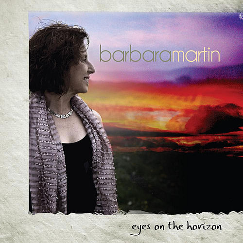

Barbara Martin
Barbara Diane Martin Richardson was an American singer, best known as one of the original members of Motown group The Supremes. She was born in Detroit.
Complete Discography & Tracklists (15)
2018 What's Up 🎵 0 Tracks
No tracks registered.
2018 More Than Words 🎵 0 Tracks
No tracks registered.
2018 Lonely Day (Acústico) 🎵 0 Tracks
No tracks registered.